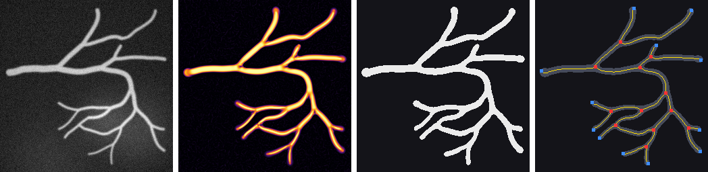
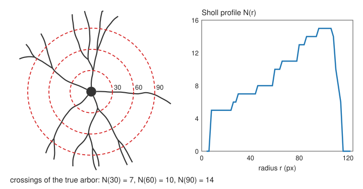

Neurons: total length, branch points, branch order, Sholl analysis.
Vessels: length and branching density, radius, tortuosity, loops.
How good is the graph? Comparing with a known truth.
Slides titled The math give the formulas and proofs; the ideas are complete without them.
Thresholding thin tubes fails
A fluorescence image of a neuron or a vessel network: thin, faint branches next to thick bright ones, on an uneven background.
A global threshold high enough to suppress the background cuts the faint branches into pieces: gaps.
Every gap splits an edge, adds two false end points, and loses length.
A threshold low enough to keep the faint branches makes the thick ones fat, merges neighbours, and lets background through.
What we want: a filter that responds to tubes of any width, and to nothing else.
Recall: the Hessian and vesselness
From the edges day (the Hessian unit): the Hessian of the image smoothed at scale \sigma, normalised by \sigma^2, has two eigenvalues ordered by size, |\lambda_1| \le |\lambda_2|.
Tube (bright line): \lambda_2 strongly negative, \lambda_1 \approx 0. Blob: both large. Background: both small.
Frangi vesselness: large when \lambda_2 is strong (above a contrast c) and |\lambda_1/\lambda_2| is small (blob penalty \beta); taken as the maximum over several \sigma.
The best scale grows with the width of the tube.
Here we use it as a tool; how it works is the edges day’s.
Vesselness as the first step of a measurement
Choose the scales from the expected radii: from the thinnest branch (σ about its radius) to the thickest vessel. Too few large scales: thick vessels look hollow (two parallel ridges).
Threshold the vesselness, not the image: the uneven background is gone, faint and bright tubes score alike. Use hysteresis (strong seeds, weak connections; the idea from the thresholding day, the implementation from labelling).
Its failure modes reappear downstream, in the graph:
junctions fade (two crossing tubes look like a blob): gaps at branch points, lost junctions, extra end points;
touching parallel vessels merge: one edge instead of two;
bright blobs on a vessel: spurious short branches.
The pipeline

image → vesselness (σ = 1 … 5) → hysteresis threshold + clean (remove specks below 30 pixels, fill holes up to 20 pixels) → skeleton (thinning) → prune spurs → graph (blue: end points, red: branch points) → measurements.
Try it: a vessel network
Neurons: what is measured
From the skeleton graph of a neuron’s dendrites (the soma is one big node):
Total dendritic length: sum of the edge lengths (with a corrected estimator).
Primary branches: edges leaving the soma.
Branch points and terminal points (end points).
Branch order: centrifugal (1 for branches leaving the soma, +1 at every branch point outwards) or Strahler (from the tips inwards: tips have order 1; where two branches of equal order meet, the order goes up by one; otherwise the larger order continues).
Each is one number per cell, compared between conditions (e.g. treated vs control neurons).
The math: Strahler order
For a rooted tree, the Strahler order of an edge is computed from its children:
S(e) = \begin{cases} 1 & e \text{ ends at a tip,} \\ \max_c S(c) & \text{if the maximum is reached by one child only,} \\ \max_c S(c) + 1 & \text{if two or more children reach the maximum.} \end{cases}
A balanced binary tree with 2^k tips has order k + 1 at the root; adding side twigs to a long branch does not raise its order.
Horton’s ratios: in many natural trees (rivers, vessels, dendrites), the number of branches drops by a roughly constant factor from one order to the next.
Centrifugal order counts from the root instead: it grows with every branch point passed, so long chains of side branches get high orders.
Sholl analysis
Sholl (1953): draw circles of radius r around the soma and count how many times the arbor crosses each circle.

The Sholl profileN(r): one curve summarising how complex the arbor is at each distance.
Read off: the maximum number of crossings, the critical radius where it occurs, the largest radius reached.
On the skeleton graph: a crossing is an edge passing the circle; count sign changes of (distance − r) along each edge path.
Try it: neuron and Sholl profile
Vessel networks: what is measured
Length density: total length per image area (mm/mm²), and branching density: branch points per area.
Radius along the centreline: \mathrm{DT} on the skeleton (diameter 2\,\mathrm{DT}); compare with the best vesselness scale, which also grows with the radius.
Tortuosity per edge: path length / chord (straight-line distance between its ends). 1 = straight; raised in tumour vessels and in some retinal diseases.
Loops (anastomoses): the cycles E - V + C of the graph.
Vessel area fraction: mask area / image area.
Retinal photographs are the standard 2D test images for vessel segmentation; micro-CT and light-sheet stacks for 3D vessel trees.
The math: tortuosity and Murray’s law
Tortuosity\tau = L / C: path length over chord. A circular arc of opening angle \varphi: L = R\varphi, C = 2R\sin(\varphi/2), so \tau = \dfrac{\varphi/2}{\sin(\varphi/2)}: 1.11 for a quarter circle, \pi/2 = 1.57 for a half circle.
Other tortuosity measures: total curvature along the edge, or the number of inflection points; the ratio L/C cannot tell one large bend from many small wiggles.
Murray’s law (1926): at a bifurcation, r_0^3 = r_1^3 + r_2^3 (minimal work of pumping blood plus maintaining its volume). A symmetric split gives r_1 = r_2 = 2^{-1/3} r_0 = 0.794\,r_0. The synthetic trees in the demo follow it; measured radii can be checked against it.
How good is the graph?
With synthetic trees the true graph is known, so each measurement can be checked.
Total length: relative error (estimator, gaps, spurs).
Branch points: match measured to true ones within a distance (here 8 pixels): missed (true, unmatched) and spurious (measured, unmatched).
How they move with the conditions:
more noise → more spurs → spurious branch points and end points (pruning repairs most of it);
a high threshold → junctions fade → missed branch points, extra end points, lost length;
one scale only → thick vessels hollow → double lines, missed junctions, too much length.
Matching objects and scoring detections in general (F1, average precision) is the subject of the evaluation day.
Try it: noise and fading junctions
Tracing: what neuroscientists use
Besides automatic skeletons, neurons are often traced: by hand or semi-automatically, clicking along each dendrite while software follows the ridge (for example by minimal paths, see the dynamic programming elective).
The result is stored as a tree file: a list of points, each with a position, a radius and the index of its parent point (the root has none). Graph, lengths, branch orders and Sholl profiles are computed from it.
The synthetic trees of the demo are stored exactly like that, which is how their ground truth is known.
Large public archives hold such tracings of tens of thousands of neurons; images are rarer.
In 3D
3D vessel trees (micro-CT, light-sheet microscopy) and whole neurons are imaged as stacks.
The same pipeline: a 3 × 3 Hessian per voxel (three eigenvalues: a tube has two large, one small), 3D thinning (simple points with 26/6 connectivity), 3D graph.
Anisotropic voxels (\Delta z often 2–5 × \Delta x): distances and lengths must use the real spacing (marching-cubes elective, volumes unit).
Centreline + radius is a compact model of a vessel tree: render it as tubes instead of a surface mesh.
Summary
Thin, faint tubes need a tube filter before thresholding: multi-scale vesselness (edges day), scales chosen from the expected radii, then hysteresis.
Neurons: total length, primary branches, branch and terminal points, branch order (centrifugal, Strahler), Sholl profileN(r).
Vessels: length and branching density, radius (\mathrm{DT} on the skeleton), tortuosityL/C, loops E - V + C.
Check against a known truth: missed and spurious branch points, length error; they reveal the filter’s failure modes (fading junctions, merged vessels, spurs).